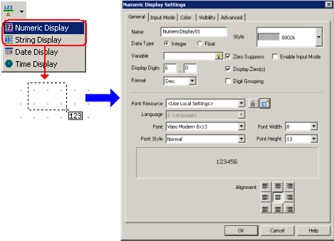
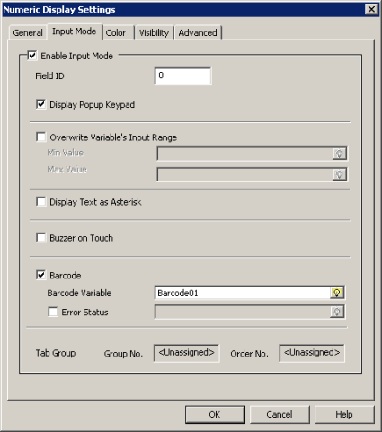

|
|
|
|
|
|
|
|
In the Graphical Objects Toolbar, select either the Numeric Display or String Display icon then click and draw on a panel to open the Display Settings dialog box.
Since most applications display bar code data as strings, these instructions use a String Display.

In the General tab, set up:
Variable: For a String Display, select the STRING variable that displays the bar code data. For a Numeric Display, select the Integer or REAL variable. This variable should not be the same as the Bar Code Input variable to read data.
Display Length: For a String Display, define the number of characters in the bar code.
Zero Suppress, Display Digits, Display Zero(s), and Format: For a Numeric Display, select to suppress or display leading zeros, specify the number of digits displayed to the left and right of the decimal point, select to display "0" when data is equal to (0), and select a display format for values from the drop-down list.
Click the Input Mode tab, select the Enable Input Mode checkbox, and select the Barcode checkbox.
When you select Enable Input Mode, the Display Popup Keypad check box is automatically selected, which displays a popup keypad when inputting data. To disable the popup keypad, clear the Display Popup Keypad check box.

When you select the Barcode checkbox, the bar code string variable (Barcode01) should automatically be configured in this field.

You can change the name of the Barcode variable in the Variable Properties.
You can create a new string variable, and use the variable as a bar code variable.
Variable Name: User-defined
Data Type: String
Data Source: External
ScanGroup: Barcode Scanner XX (use a scan group that supports the type of bar code you want to use)
DeviceAddress: No need to set up. Set to 0.
In the Error Status field, select the integer variable used to detect scanning and conversion of data. See Section 6.3, Connecting to Equipment.
|
Error Status |
Description |
|
0 |
Bar code scan successful |
|
1 |
Copy from Bar Code Input Variable to Display Variable unsuccessful, probably because the data type of scanned data does not match the Display Variable. |
Click OK to complete the bar code display.

Value animation does not support working with Bar Code variables.